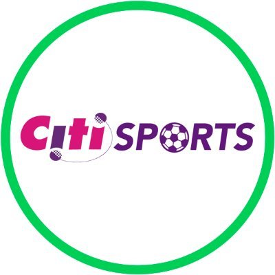
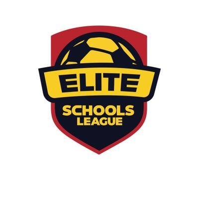
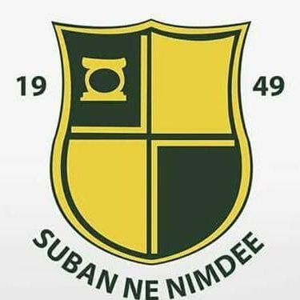
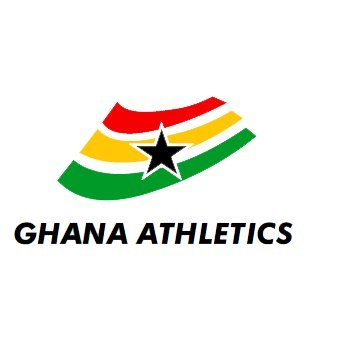

Media Assets
Official Photos
View Full Gallery →Swipe or use arrows to browse · All photos approved for editorial use with attribution: "Photo: Bossman Kusi Appiah / Ghana Athletics / Prempeh College"


For Journalists & Media
Everything you need to cover Bossman Kusi Appiah — official bios, stats, photos and media contacts. All assets are free to use with attribution.
Official Biography
Recommended for match programmes, social media and brief features
Bossman Kusi Appiah (born 15 June 2008, Kumasi, Ghana) is a Ghanaian track and field athlete and footballer representing Prempeh College in Kumasi. He is the National U20 400m Hurdles Champion and Record Holder (52.34s), the Ashanti Regional Record Holder (51.69s), a three-time Ashanti Region 800m Champion, and the Overall Best Male Athlete at the 2025 Ashanti Region Super Zonals. In August 2026, he will represent Ghana at the World U20 Athletics Championships in Eugene, Oregon, USA.
Recommended for full features, interviews and profiles
Bossman Kusi Appiah is one of the most exciting young multi-sport athletes to emerge from Ghana in recent years. Born on 15 June 2008 in Kumasi, he represents Prempeh College — one of Ghana's most prestigious schools — with exceptional distinction across both athletics and football.
On the track, Bossman has rewritten the record books at every level he has competed. In February 2026, he broke the Ashanti Region Schools record in the 400m Hurdles with a time of 51.69 seconds at the Super Zonal Championships. The following month, he won gold at the 2026 National Open Championships in Cape Coast with 52.34 seconds — setting a new National U20 record and earning direct qualification to the 2026 World U20 Athletics Championships in Eugene, Oregon, USA this August.
His dominance extends beyond the hurdles. Bossman is a three-time Ashanti Region 800m Champion, a two-time Overall Best Male Athlete at the Ashanti Region Super Zonals, the National SHS 800m Champion, and has held numerous regional records across multiple events. In his SHS Form 3 season alone he equalised the Ashanti 800m regional record and shattered the 400m Hurdles regional record.
Off the track, Bossman is an accomplished footballer — a dynamic right winger who serves as second captain of the Prempeh College SHS soccer team, was named Best Player at the UBaSSA Games 2023, is the top scorer of the 2026 Ashanti Regional Soccer Qualifiers, and became a registered Division 2 player with Bafag Rainbow FC at just 15 years old.
Bossman Kusi Appiah is a rare combination of athletic talent, academic discipline, and competitive excellence — a rising force in Ghanaian and African sport.
At a Glance
| Stat | Detail | Mark / Result |
|---|---|---|
| Nationality | Ghanaian 🇬🇭 | — |
| Date of Birth | 15 June 2008 · Kumasi, Ghana | Age 17 |
| School | Prempeh College, Kumasi | — |
| Primary Event | 400m Hurdles | — |
| Personal Best — 400mH | Ashanti Region Super Zonal 2026 | 51.69s Regional Record |
| National U20 Record — 400mH | Cape Coast National Open 2026 | 52.34s National Record |
| 800m Personal Best | Ashanti Region Super Zonal | 1:51.50 |
| World U20 Qualification | Eugene, Oregon USA · August 2026 | Qualified ✓ |
| Ashanti Region 800m Champion | Three consecutive titles | 3× |
| Overall Best Male Athlete | Ashanti Region Super Zonals | 2× |
| Football Position | Right Winger · Prempeh College & Bafag Rainbow FC | 2nd Captain |
| Best Football Player | UBaSSA Games UG@75 2023 · KNUST | Best Player ✓ |
Media Assets
Swipe or use arrows to browse · All photos approved for editorial use with attribution: "Photo: Bossman Kusi Appiah / Ghana Athletics / Prempeh College"
In the News

🔥 Regional Record
🔥 Broke Own Record
🌍 World U20 Qualifier
🏅 RecordGet in Touch
For interviews, profile features, event accreditation, photo requests or any media enquiry — use the contacts below. We aim to respond within 24 hours.